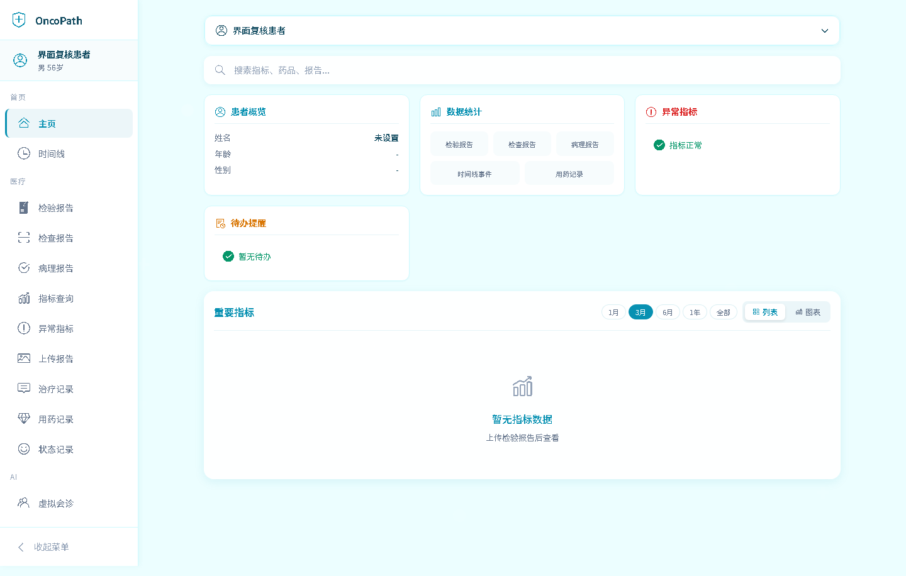
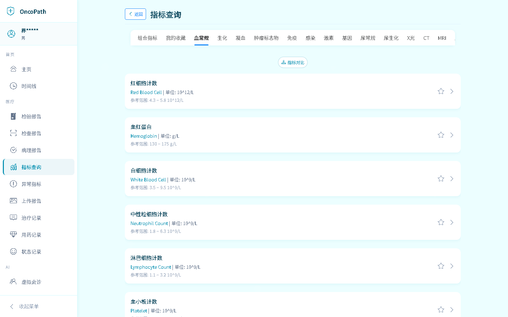
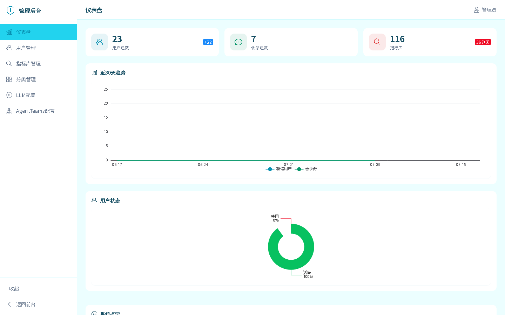
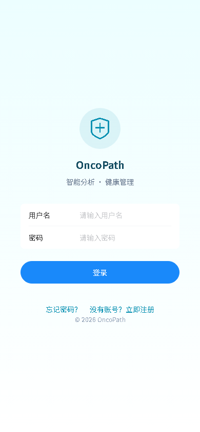
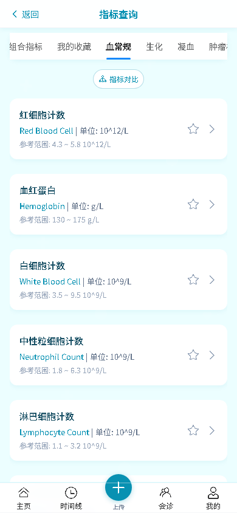

界面预览
清爽的医疗信息界面，桌面与移动端全端适配
桌面端

仪表盘首页

指标标准库

管理后台
移动端

登录

首页

指标查询
从数据录入到智能分析，覆盖医疗信息管理全流程
PaddleOCR + LLM 智能识别检验报告图片，自动解析表格结构并匹配标准指标库，支持人工审查修正。
统一聚合检验、检查、病理、用药、事件 5 张表，可视化治疗历程，支持里程碑标记与多维筛选。
LLM 将专业指标翻译为通俗语言，输出整体评估、异常解读、趋势变化与复查建议，自动创建随访提醒。
通过 AgentTeams 集成入口，由多 Agent 专家团队进行会诊分析，OncoPath 负责资料聚合与结果展示。
用药记录管理、服药打卡、依从性统计；随访提醒支持手动 / AI 解读 / 会诊三种来源，确认复查闭环。
PHI 字段 Fernet 加密存储、SSO 单点登录、登录失败锁定、XSS 防护、路径遍历防护、PHI 审计日志。
桌面端侧边栏导航 + 移动端底部 Tab 栏，响应式布局自动适配，平板 / 手机 / 桌面一致体验。
检验报告 / 时间线 / 完整病历 PDF 导出（内置中文字体）；报告分享令牌支持限时限次访问。
清爽的医疗信息界面，桌面与移动端全端适配

仪表盘首页

指标标准库

管理后台

登录
首页

指标查询
现代化全栈架构，安全与性能并重
Docker Compose 一键拉起完整环境
git clone https://github.com/nickzhang1102/oncopath.git
cd oncopath
cp .env.example .env
# 编辑 .env，填写 SECRET_KEY / DB_PASSWORD / ENCRYPTION_KEY / LLM_API_KEYdocker compose up -dbackend 容器自动执行数据库迁移与种子数据初始化。
前端：http://localhost:3000
默认管理员：admin / admin123（登录后请立即修改密码）